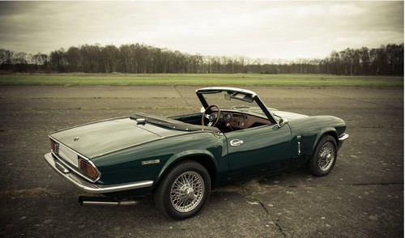

Production
The Triumph Spitfire 1500 was produced from November 1974 to August 1980, with 95,829 units made. It featured a 1,500 cc engine that compensated for power loss due to pollution control modifications, especially for the U.S. market. The 1500 model maintained the design and structure of previous versions with minor updates to meet evolving regulations.
Image description: Triumph Spitfire 1500